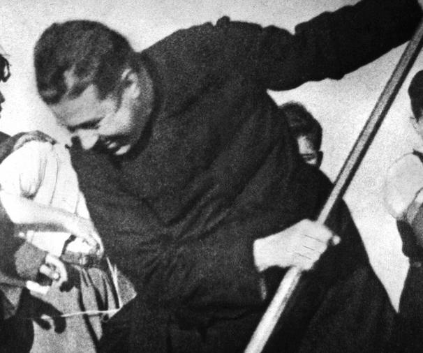
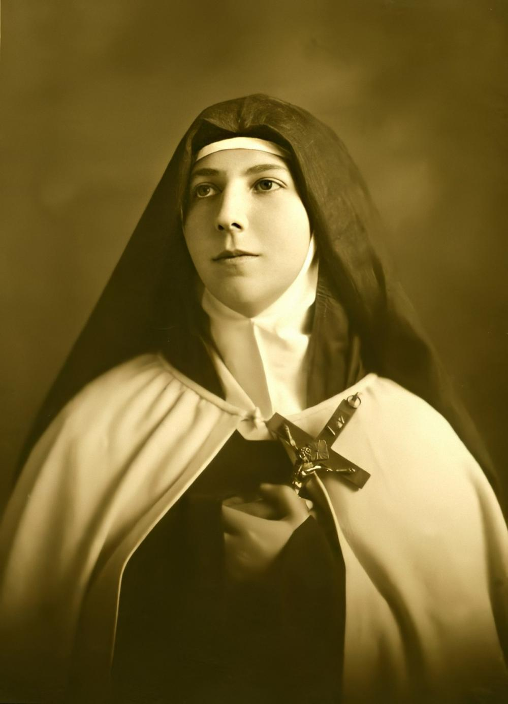

Santos Chilenos
El Padre Hurtado
Luis Alberto Miguel Hurtado Cruchaga o mas conocido como Padre Hurtado, nacio el 22 de enero de 1901 en Viña del Mar.
Se volvio sacerdote en 1933
ordenado por la cardenal de belgica Ernest Van Roey. Su estadia en los paises europeos fue intensamente aprovechada para el estudio de temas
que lo adiestrarían para conseguir una de las metas que más deseaba: El poder trabajar con jovenes.
Pese a su temprano fallecimiento en 1952 logró hacer una gran cantidad de cosas las cuales son:
_Fue fundador de la revista Mensaje.
_Se preocupo por los trabajadores.
_Fundo un hogar para las personas sin casa llamado El Hogar de Cristo.
El Padre Alberto Hurtado fundó en el mensaje y la acción del Hogar de Cristo, para lograr una sociedad que se preocupa de
los más excluidos, que cree en el valor de lo comunitario, y que se la juega por transformar todo aquello que nos deshumaniza.
El Padre Hurtado es unas de las personas más importante de la iglesia católica chilena. La gran fe que el tenia, su gran personalidad y esa pasión que
tenia por ayudar a los más necesitados hicieron de él una figura de gran influencia.

Teresa de los Andes
Juana Enriqueta Josefina de los Sagrados Corazones Fernández Solar, conocida por la Iglesia católica como santa Teresa de Los Andes, fue
una religiosa católica chilena, perteneciente a las carmelitas descalzas.
Nacio el 13 de Julio de 1900 y fallecio muy tempranamente el 12 de abril de 1920. La familia de Teresa de los Andes llevaba una buena situacion
economica y siempre fueron de la religión cristiana.
Juana recibió su formación escolar en el colegio de las monjas francesas del Sagrado Corazón. A los
catorce años de edad, inspirada por Dios, decidió consagrarse a El como religiosa, en concreto, como carmelita descalza.
Fue beatificada por San Juan Pablo II
en una celebración eucarística en el parque O’Higgins de Santiago el 3 de abril de 1987, durante su visita pastoral a Chile. Mientras que el 21 de marzo de 1993, fue canonizada en la basílica de San Pedro del Vaticano por el mismo pontífice.
Uno de los milagros más famosos es el de que un bombero sufrio una descarga electrica y cayo en el hospital sin ninguna esperanza de vida, la madre
del bombero inicio una cadena de oracion en imagen a la Teresa de los Andes y finalmente el bombero logro recuperarse.
